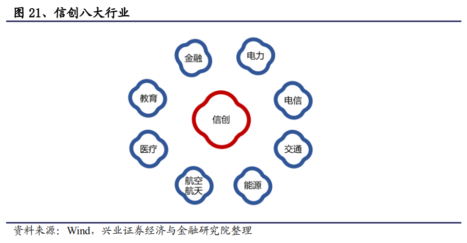
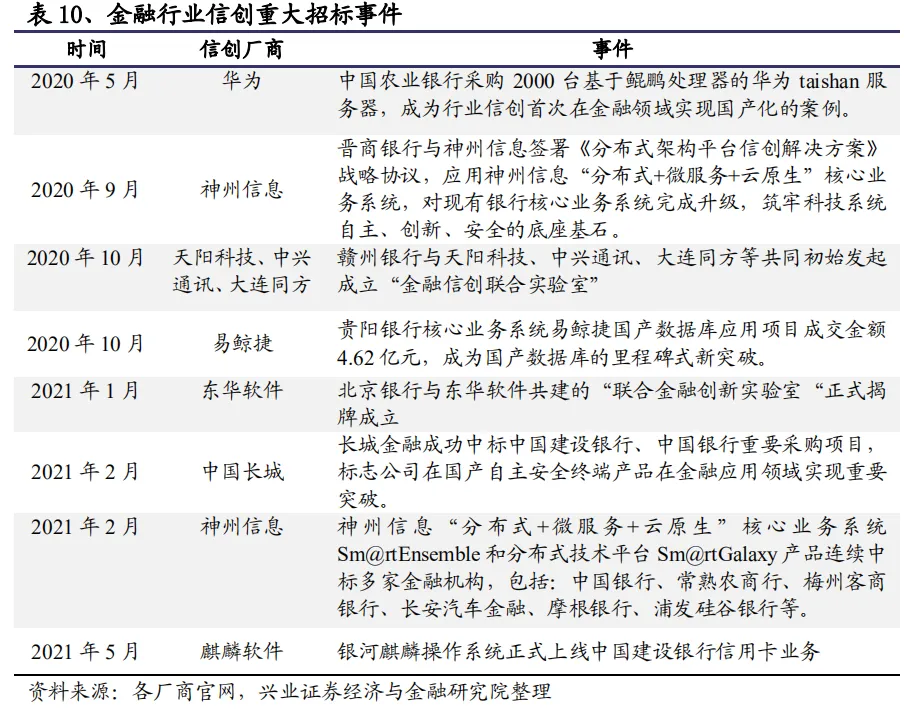
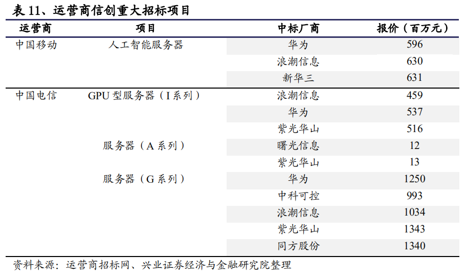
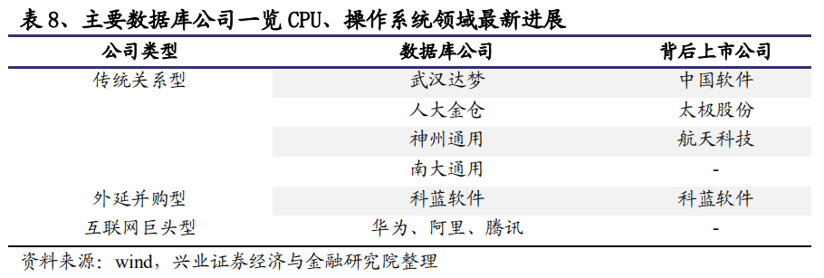

深度分析 | 信创产业市场测算、行业信创发展节奏、产品迭代及价格变化、未来预测
核心观点：
党政信创方面，今年招标体量较大，且去年有部分收入延迟到今年确认，因此今年相关企业的收入有望达到翻倍以上。之后县乡级别电子公文交换系统、电子政务的国产化会紧密衔接。金融信创产业发展将不断加快，在此背景下，我们预计金融行业信创试点机构今年国产化投入占全年IT支出的15%，2022年有望达到30%，到2023年将会完成一般系统的替换。根据调研，金融行业大规模招标将于下半年开启。此外，市场关注的芯片信创环节，CPU流片绝对断供可能性低。一方面美国对境外的流片厂商可以施加影响，但难以真正掌控；另一方面，国内各科技阵营亦在快速推进芯片流片工艺的研发工作，我们预计到2022年去美化的高制程芯片流片产线即能面世。
信创产业认知分析
信创的本质是发展国家信息产业。信创产业的发展，过程是中国基础软硬件厂商的崛起，结果是世界信息产业格局的重构。这已经不仅仅是对wintel架构是否安全的质疑，更是要发展中国IT产业完整的产业链和核心竞争力。所以信创事业的本质就是发展国家信息产业，是中美在信息技术领域的顶层博弈。因此，现在正在进行的党政信创，并不仅仅是简单的国产化替代，而是在打造一个打破信息孤岛、未来形成资源共享的云平台的完整生态，是党政信息系统的一次升级。
正确认识信创的重要性。中国信创产业最早可追溯到2006年前后推进的863计划、核高基计划，之后，国家多部门持续推进国产基础软硬件发展。2018年7月，习近平在中央财经委员会第二次会议上强调，“关键核心技术是国之重器，对推动我国经济高质量发展、保障国家安全都具有十分重要的意义”，提出要将科技发展主动权掌握在自己手中。年初以来政策密集发布，2021年“十四五”规划纲要明确了信息领域安全体系建设和国产替代的目标，有利推动信创行业的快速发展。科技创新也成为十四五期间的产业政策主线，科技自立自强成为国家发展的战略支撑。在十四五期间的十二项核心任务中，“科技自立自强”放在首要和核心位置。科技自强的前提是科技自立，而科技自立正是指核心技术“自主可控”的信创事业。
信创产业是国家经济发展的新动能。信创产业发展是国家经济数字化转型、提升产业链发展的关键。我国明确了“数字中国”建设战略，抢占数字经济产业链制高点。推进信创产业的发展，促进信创产业在区域性落地生根，带动传统IT信息产业转型，构建区域级产业聚集集群，国产信创生态的建设将成为推动经济发展的重要力量。
信创产业万亿市场分析
十四五期间信创产业规模预计将达到1.5万亿。根据人力资源与社会保障事业发展统计公报数据，2016年我国有700多万公务员与3000多万事业编（未计算离退休人员，考虑2/3配备PC），加上内网桌面，对应近3000万台存量PC，及260万台服务器。根据IDC的PC与服务器出货量预测，我们预计重要行业信创对应存量规模为6000万台。假设一台PC背后涉及的软硬件及配套产品在2.5万元左右，对应党政含事业单位信创规模在7500亿元，重要行业投入规模在1.5万亿左右。
国内信创产业远期空间测算：
数据来源：IDC、Wind、集邦咨询，东吴证券研究所（注：替换规模是分领域加总的结果，其中全行业替换规模为党政和重要行业全部替换、剩余部分50%替换的结果之和）
党政、行业信创发展节奏分析
信创产业加速推进行业渗透，金融、电信等领域迎来战略机遇期。2021年是信创产业在行业端加速启动的年份，涉及金融、电力、能源、医疗等八大行业。行业层面PC、服务器等数量是党政领域数倍，行业层面国产化趋势加速将为产业链厂商带来更加广阔市场空间。

党政信创：
党政信创产业规模逐年递增，今年大规模招标预计在六七月份启动。规模和节奏上，在明年年中前完成党政部委省市级别的电子公文交换系统国产化替换。今年招标体量较大，且去年有部分收入延迟到今年确认，因此今年相关企业的收入有望达到翻倍以上。之后县乡级别电子公文交换系统的国产化会紧密衔接。党政信创分为两部分，除了电子公文交换系统外，还有电子政务系统，后者的替换规模远大于前者。
金融行业信创：
金融行业信创首当其冲。金融安全是国家安全的重要组成部分，金融信创产业发展将不断加快。在此背景下，我们预计金融行业信创试点机构今年国产化投入占全年IT支出的15%，2022年有望达到30%，到2023年将会完成一般系统的替换（一般系统指公文、财务、人事、决策支持等系统）。以四大国有银行为例，每家每年的IT支出都超过200亿以上，金融行业信创将带来巨大市场增量。根据我们的调研，金融行业大规模招标将于下半年开启。
金融行业信创市场巨大，银行业国产替代成主力军。当前我国的金融行业信创已进入高质量发展阶段，银行业作为我国金融行业支柱，在信创领域的推进速度尤其突出。从四大银行到地方银行，相继在与国内厂商合作，推进企业操作系统与应用软件国产替代。此外在信创浪潮下，金融业数据库国产化也在加速，其中陆金所已宣布实现100%数据库国产化。截至到2021年3月，我国银行数量为3822家，金融行业巨大的国产替代需求将驱动信创市场需求的爆发。

电信行业信创：
电信行业信创目标5年内实现完全替换。2020年电信行业率先开展行业信创，以电信、移动、联通等运营商为代表，其公开发布的服务器集采中国产CPU服务器占比超过整体招标20%，最大超过35%以上。我们预计电信行业会在5年内实现完全替换，包括一般系统和核心系统，能替尽替。
电信领域信创加速，运营商积极推动核心部件国产化。以服务器为例，中国移动人工智能服务器采购项目中标厂商分别是华为、浪潮信息和新华三，总报价为18.57亿元。中国电信服务器采购项目中标企业也均为国内厂商。随着5G建设的持续推进，国产厂商技术优势显著，电信行业信创将会进一步加速。

信创全产业链产品迭代分析
信创全产业链包括硬件的CPU、GPU和软件的BIOS、操作系统、数据库、中间件、办公软件等多个环节。当前产业在党政领域替换的牵引下迎来产品迭代更新机遇，尤其前期CPU、操作系统、数据库、中间件等薄弱环节厂商迎来难得发展契机。
CPU领域目前主要有四架构六产品，发展进入突破期。其中，主流架构为X86与ARM。X86占据市场主要份额，主要由Intel芯片垄断。国产主要有海光和兆芯两款产品。目前ARM架构由国产厂商为天津飞腾和华为海思研发。除此之外，MIPS与Alpha架构体系的国产代表厂商分别为龙芯（发布自研架构LoongArch）和申威，均在产品适配方面成果显著。
操作系统是基础软件核心环节，信创成功的关键。1999年以来，国内国有企业和民营企业先后基于Linux源码进行研发的国产操作系统。随着政策不断推进与加码，以及产业上下游对于系统标准化制定的迫切诉求，国产操作系统正朝向统一与融合发展。当前主流操作系统主体为统信软件与麒麟软件，随着关键领域操作系统国产替代加速，推出的新一代产品在政企的应用需求将持续扩大。
数据库是信创的核心环节，巨头主导市场，信创聚焦关系型产品。国产数据库方面，主要分为传统关系型数据库厂商、外延并购厂商和互联网巨头旗下产品。目前，国武汉达梦与南大通用是国产数据库第一梯队厂商。2020年底，武汉达梦的达梦数据共享集群（DMDSC）正式大规模商用，可满足高性能交易处理场景的需求。2021年1月，南大通用入选信创产业60强企业，GBASE 8a分别与浪潮K1 Power、Smart-X完成兼容性互认证，持续服务金融、党政、电信 、政企等关键领域。

中间件：开放市场格局，产业迎来多强竞争态势。早期，我国中间件市场由 IBM 和 Oracle 占领，随着国产厂商技术升级，以东方通、宝兰德为代表的国产厂商赶超者，在电信、金融、政府、军工等行业客户中不断打破原有 IBM、Oracle 垄断格局，逐步实现了中间件产品的国产化自主可控。
信创产品价格变化分析
今年党政信创产品价格有望改善。2020下半年是党政信创大规模放量元年，基于获取用户粘性与产品改进的目的，各家产品厂商纷纷把市场份额作为最重要考核指标，相对放宽对产品价格的要求，因此在2020年形成了价格战较为剧烈的局面。同时我们也观察到，出于维持未来研发和运维的考虑，各家产品厂商并没有无限压低产品价格以获得用户青睐。最激烈的白刃战已经过去。
行业信创产品价格远高于党政信创。首先，行业客户不依赖财政资金，自有经营现金充沛，支付意愿和能力更强。其次，行业客户信息化自主建设能力强，行业信创对集成商的需求降低，提升了信创产品厂商的议价空间。此外，信创市场属于性能导向，更强调适用性，产品价格因素的影响程度在下降：行业客户绝不会因为一款产品便宜而采购，一定是因为其性能符合要求。因此我们判断行业信创市场的产品价格将会明显高于党政市场。
未来预测
行业核心系统替换难度最大，国产化效果卓然，今年有望出现包括核心系统在内完全国产化的银行。建设银行信用卡核心系统部分业务于2020年11月15日在全栈信创平台上线，实现了核高基重大专项“面向金融行业的服务器软硬件应用关键技术研究”课题目标，并于2021年4月23日在建行稻香湖数据中心以优异的成绩顺利通过验收。采用以“鲲鹏服务器+麒麟操作系统+高斯数据库”的全栈信创方案，替换掉“X86服务器+red hat操作系统+Oracle数据库”的传统方案，性能提升超过10%，意义重大，为解决核心业务的自主创新起到了重要示范作用。因此，我们预计今年有望出现包括核心系统在内完全国产化的银行。
CPU流片绝对断供可能性低。我们认为芯片流片绝对断供发生的可能性相对较低。对纳入实体清单的中国企业而言，如果代工厂仅仅是代工，而不提供受控的美国物项，或提供受控物项但含有的美国技术或服务成分不超过货品总价值的25%，就可以继续给实体清单上的中国企业提供代工服务。此外，美国对境外的流片厂商可以施加影响，但难以真正掌控。国内各科技阵营亦在快速推进芯片流片工艺的研发工作，我们预计到2022年去美化的高制程芯片流片产线即能面世。